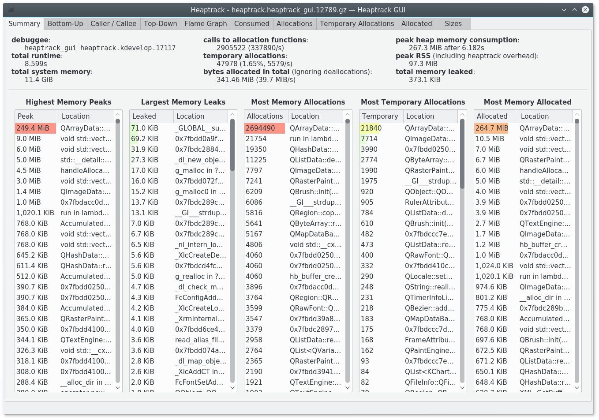
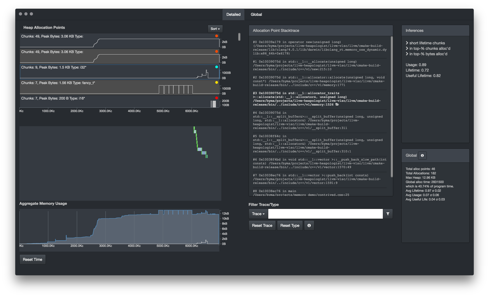
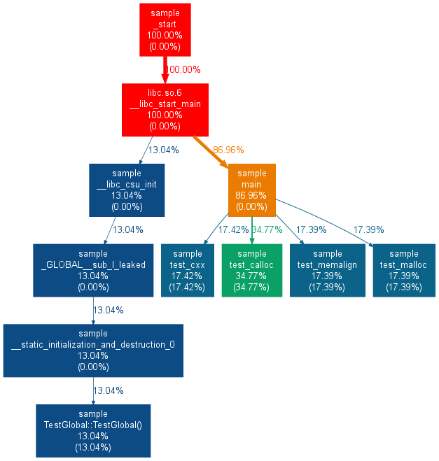
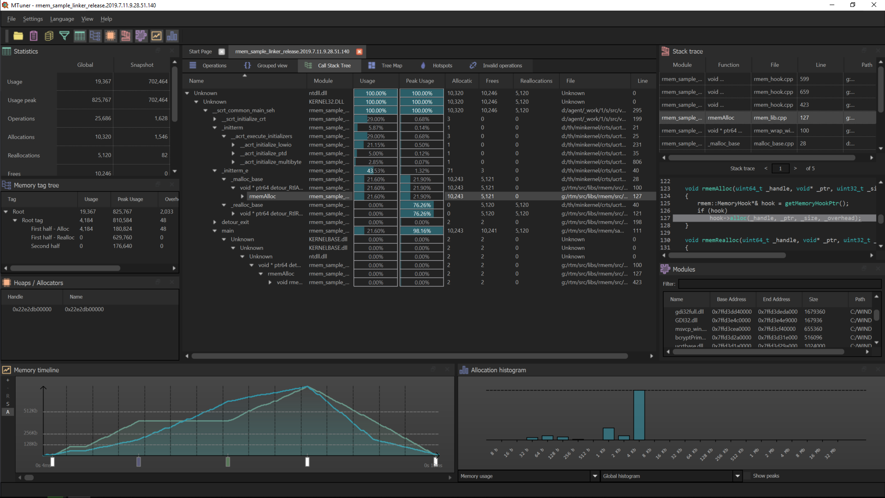
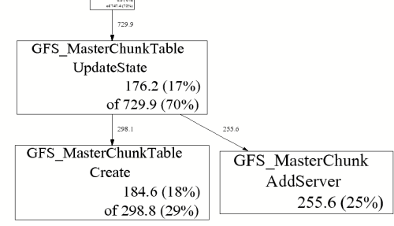
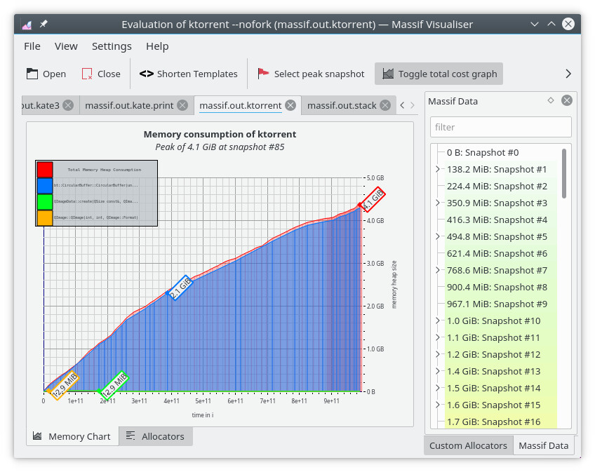
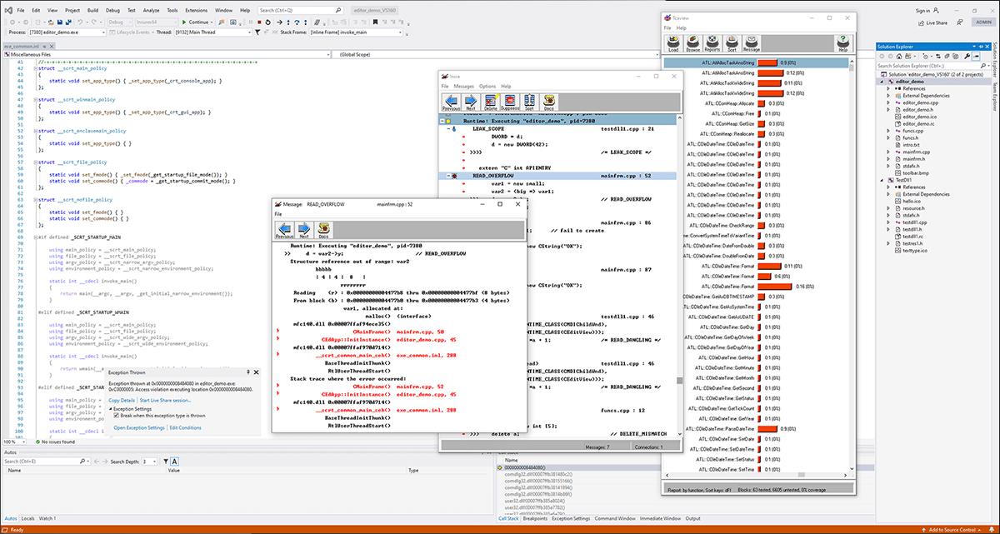
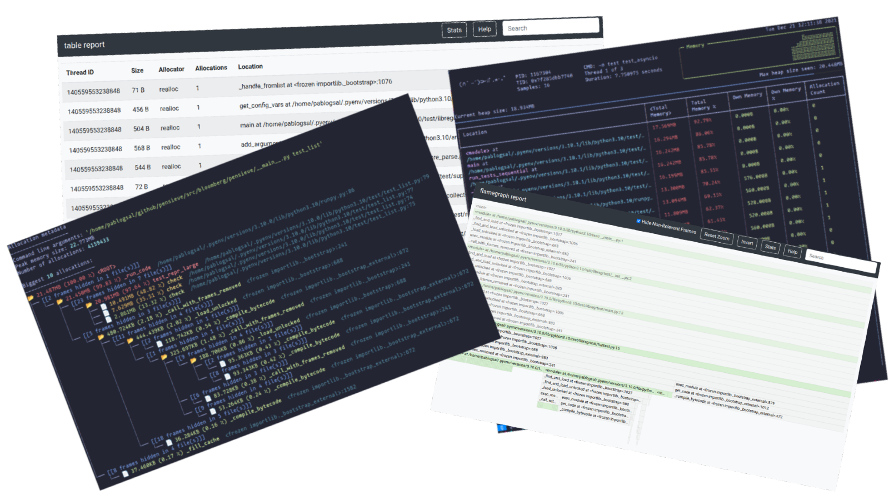
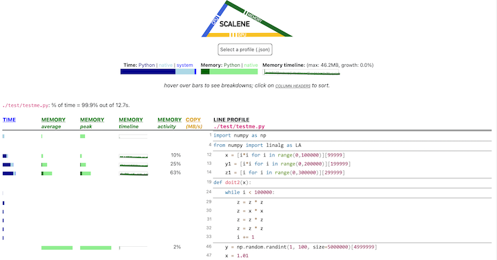

Other tools
Of course MALT is not the only tool available to profile the memory behavior of an application.
Here a list (certainly incomplete) of the others I know.
Heaptrack
A Heap Memory Profiler for Linux from the KDE team. In some ways it has some close idea to MALT.
This one has the advantage to be officially packaged in distributions like Debian / Ubuntu.
URL: https://github.com/KDE/heaptrack
{kind=link}

Memoro
A memory profiler close to MALT also in some ways, for the dynamic part of the memory management.
URL: https://epfl-vlsc.github.io/memoro/
{kind=link}

Memtrail
A tool to report the callocations on the call tree just like the tree part of MALT but in a static way.
URL: https://github.com/jrfonseca/memtrail
{kind=link}

MTuner
Another memory profiler, in some ways close to MALT.
URL: https://github.com/RudjiGames/MTuner
{kind=link}

Google Heap Profiler
Google heap profiler is a light memory profiler comming with TCMalloc, the memory allocator from google. It permits to annotate the call graph with some memory metrics.
URL: https://gperftools.github.io/gperftools/heapprofile.html
{kind=link}

Valgrind memcheck
Valgrind is a well know tool to perform analysis of programs. One of its sub tools is memcheck which permits to detect the wrong memory accesses and the memory leaks in a compiled program. The output is pure texte in the terminal.
URL: http://valgrind.org/
==19182== Invalid write of size 4
==19182== at 0x804838F: f (example.c:6)
==19182== by 0x80483AB: main (example.c:11)
==19182== Address 0x1BA45050 is 0 bytes after a block of size 40 alloc'd
==19182== at 0x1B8FF5CD: malloc (vg_replace_malloc.c:130)
==19182== by 0x8048385: f (example.c:5)
==19182== by 0x80483AB: main (example.c:11)
Valgrind massif
Valgrind is a well know tool to perform analysis of programs. One of its sub tools is massif which aims at giving hints about memory consumption of a program. It comes with a KDE GUI (massif visualizer) to display the profile.
{kind=link}

Dr. Memory
Similar to Valgrind Memcheck it search for memory access issues.
~~Dr.M~~ ERRORS FOUND:
~~Dr.M~~ 5 unique, 5 total, 574 byte(s) of leak(s)
~~Dr.M~~ 0 unique, 0 total, 0 byte(s) of possible leak(s)
~~Dr.M~~ ERRORS IGNORED:
~~Dr.M~~ 5 unique, 8 total, 205 byte(s) of still-reachable allocation(s)
~~Dr.M~~ (re-run with "-show_reachable" for details)
Unicom Purify++
This one is not open-source but commercial and available on Windows, Linux, Solaris. It provides lots of metrics about memory managment.
Parasoft Insure++
This one is not open-source but commercial and only for Windows. It provides lots of metrics about memory managment.
URL: https://www.parasoft.com/product/insure/
{kind=link}

Tau
Tau is a well known HPC large scale profiler for super-computers. As a complete tool it also contains some modules about memory usage.
URL: https://www.cs.uoregon.edu/research/tau/home.php
USER EVENTS Profile :NODE 0, CONTEXT 0, THREAD 0
---------------------------------------------------------------------------------------
NumSamples MaxValue MinValue MeanValue Std. Dev. Event Name
---------------------------------------------------------------------------------------
2 52 48 50 2 MEMORY LEAK! malloc size <file=simple.inst.cpp, line=18> : int g(int) => int bar(int)
1 80 80 80 0 free size <file=simple.inst.cpp, line=21>
1 80 80 80 0 free size <file=simple.inst.cpp, line=21> : int g(int) => int bar(int)
1 180 180 180 0 free size <file=simple.inst.cpp, line=28>
1 180 180 180 0 free size <file=simple.inst.cpp, line=28> : int foo(int) => int bar(int)
3 80 48 60 14.24 malloc size <file=simple.inst.cpp, line=18>
3 80 48 60 14.24 malloc size <file=simple.inst.cpp, line=18> : int g(int) => int bar(int)
1 180 180 180 0 malloc size <file=simple.inst.cpp, line=26>
1 180 180 180 0 malloc size <file=simple.inst.cpp, line=26> : int foo(int) => int bar(int)
---------------------------------------------------------------------------------------
IgProf
Similar approach than MALT for the backend.
URL: http://igprof.org/
Dmalloc
A debug malloc library.
URL: https://dmalloc.com/
mpatrol
FOM
Find Obsolete Memory.
Memray
Dedicated for Python, this tool is well done to understand the memory behavior of a Python code.
URL: https://bloomberg.github.io/memray/
{kind=link}

Scalene
Tool to analyse the performance an memory behavior of a code in C / Python.
URL: https://pypi.org/project/scalene/
{kind=link}
